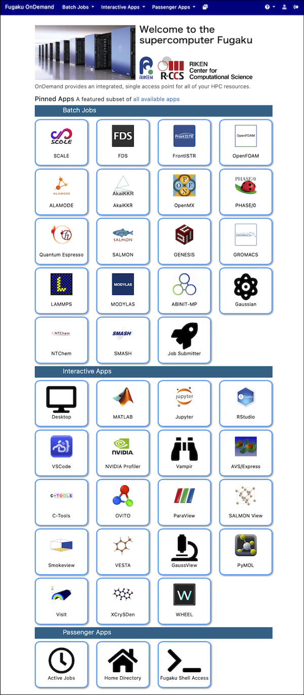

2. Dashboard Layout
The image above shows the dashboard of Fugaku Open OnDemand. The meanings of the items in the top menu bar are as follows (some may switch to icons if the browser window is narrow):
| Item | Description |
|---|---|
| Batch Jobs | Batch jobs submitted to Fugaku or the Prepost environment |
| Interactive Apps | Interactive applications running on Fugaku or the Prepost environment |
| Passenger Apps | Applications running on the Open OnDemand server |
| My Interactive Sessions | A list of session information for interactive applications |
| Help → Restart Web Server | Restart Open OnDemand |
| Help → Profiles | Click "All apps" to display all icons for Batch Jobs and Interactive Apps on the dashboard. Click "Default" to revert. |
The numbers in the image correspond to the following items:
- External Links
- Latest News
- Queue Status in Job Scheduler
- Operational Schedule
- Disk and Budget Usage
- Recently Used Interactive Applications (up to 4)
- Passenger Apps
Applications can be launched from the menu bar or from the icons in items 6 and 7.